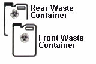
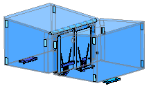
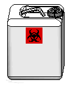
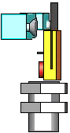
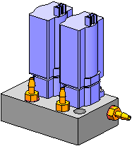
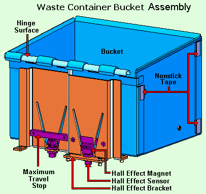
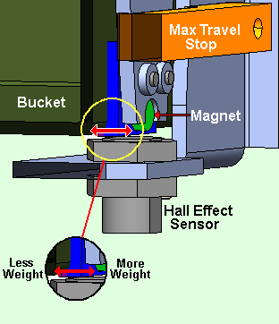
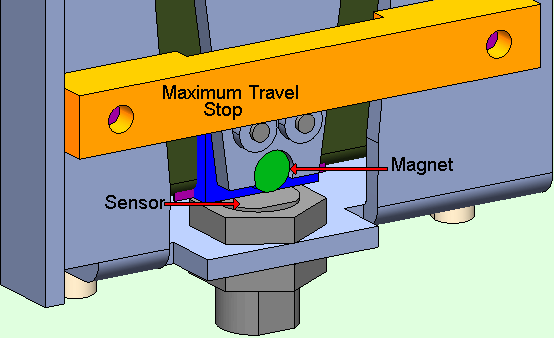
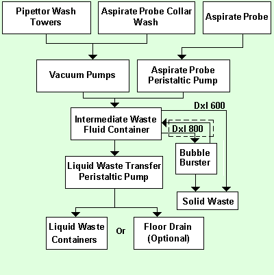

Liquid Waste Drawer Operating Principles
Purpose
This document details the operating principles for the liquid waste drawer.
Liquid Waste Subsystem
The liquid waste subsystem includes all the means for collecting the liquid waste generated within the instrument into a reusable, user-emptied container. An alternative is to pump the liquid waste out of the instrument through a tube routed to a customer drain. Pumping liquid waste to an external drain requires an optional kit. The method of liquid waste disposal is customer-chosen.
Module Function
Location
The liquid waste drawer is located in the pullout drawer in the lower left front corner of the DxI.
Operational Overview
- Waste fluid from the wash towers and the aspirate probe wash manifold is pumped to the intermediate liquid waste container by the dual-head vacuum pumps in the fluidics drawer.
- Fluid from the three aspirate probes is pumped to the intermediate liquid waste container by the aspirate probe peristaltic pump.
- Fluid accumulates in the intermediate waste container until a float switch inside the container is actuated when the float reaches its upper limit.
- The sensor actuation causes the waste transfer pump to pump fluid to the liquid waste containers.
- When the level of fluid inside the intermediate waste container drops to the point where the float switch is tripped at its lower end, the pump is powered off.
Note: This does not apply in systems with an external drain kit.
- When a waste container reaches capacity, the Hall effect sensor under the waste container bucket triggers the selector valve to switch the waste fluid to a second liquid waste container. The operator is signaled to empty and replace the container by:
-
A flashing yellow light on the front of the instrument.
-
A yellow bulk supply icon on the user interface
-
DxI 800 only: A lighted waste container icon on the horizontal surface near the substrate loader.

Note: This does not apply in systems with an external drain kit. -
- If both containers are full, then the instrument is not able to start processing tests. If the instrument is processing tests and both containers become full, then the instrument goes into Paused mode until the operator empties one of the containers. If the operator does not empty one of the two containers, then the software times out and the instrument goes into Not Ready mode.
Note: This does not apply in systems with an external drain kit.
Component Locations
This drawing shows the waste drawer components. All components located in the waste drawer adhere to the Instrument Numbering Standard of front to back and left to right.

Component Functions
| Component | Description and Function |
|---|---|
| Buckets, Waste
 |
Metal compartments into which liquid waste containers are placed.
|
| Container, Bulk Waste Fluid, DxI 600
|
DxI 600 1.25 gallon (5 liter) plastic containers used to hold liquid waste from instrument. Quantity two. |
| Container, Bulk Waste Fluid, DxI 800
 |
DxI 800 2.5 gallon (9.5 liter) plastic containers used to hold liquid waste from instrument. Quantity two. |
| PCB, Bulk Fluid Tray Interface | Provides connection points for outgoing and incoming signals and voltages required by liquid waste drawer. PCB is mounted to upper rear of liquid waste drawer. |
| Sensor, Hall Effect, Weight Scale
 |
Sensing device that detects fluid in each waste fluid container using a magnet and Hall effect sensor. Magnet is attached to a vertical bracket and Hall effect sensor is attached to horizontal lower plate. Fluid volume within waste container exerts force on magnet bracket which changes the position of the magnet.
One Hall effect sensor is located at the base of each container bucket (total of two in the drawer). |
| Valves, Container Selector
 |
Electromechanical devices that control direction of liquid waste flow of the instrument.
|
Specifications
- For DxI 600, maximum volume of each waste container: 5 liters or 1.25 gallons
- For DxI 800, maximum volume of each waste container: 9.5 liters or 2.5 gallons.
Weight Calibration Procedure
The Hall effect weight sensors are calibrated using three different calibration points, No Container, Empty Container, and Full Container. When the containers or buckets are calibrated, software determines the percent full from a small voltage signal and displays the percent on-screen using the formula:
Percentage Full = Maximum volume of container in milliliters
(Full Container V DC - Empty Container V DC)
For the calibration steps, refer to the Adjusting and Calibrating Weight Sensors procedure
Waste Bucket
The function of a waste bucket is to provide a method of detecting container fluid volume. The pivoting action of the hinged bucket and the Hall effect sensors located at the base of the bucket provide this function. The weight of the fluid exerts force on the hall effect bracket. This force causes movement and creates an electrical output from the Hall effect sensor.

Hall Effect Sensor
The Hall effect sensor is attached to the horizontal lower plate. The magnet is attached to a vertical bracket. The volume of fluid in the waste container exerts force on the magnet bracket which changes the position of the magnet, thus changing the sensor output voltage.


Waste Fluid Path
